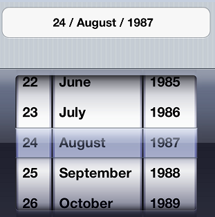
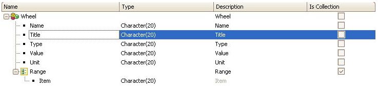
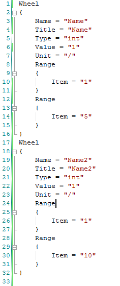
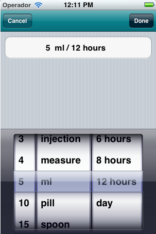

Multiwheel is a control that allows the end-user to set multiple values by swiping up and down. This allows minimizing the number of tap gestures and group values corresponding to a single concept.  This article explains a few concepts of the control. Do it yourself, follow the steps below, or check this video. How it worksIn order to use the MultiWheel control, a Structured Data Type (SDT) with the following structure has to be created:  Load the Structured Data Type with a Data Provider object adding the values that will appear in the Multiwheel. Load Example To show the control: a) Create two variables: &var1: Based on Wheel type (SDT) and with the property Collection property (IsCollection checkbox) = True. b) In the Layout section, add the variable &var2 and set the Control Type property = "MultiWheel". c) In the Event section, add the following code: &var1 = DataProviderWheel() &var2 = &var1.ToJson() How to load the Wheel SDTThe field values of the SDT members must be:
Examples of useBlood pressure: Json:
[
{ "Name":"Systolic", "Title":"Systolic", "Unit":"/", "Type":"int", "Range":["8","18"], "Value":"12"},
{ "Name":"Diastolic", "Title":"Diastolic", "Unit":"mmHg", "Type":"int", "Range":["4","14"], "Value":"8"}
]
Medicine dose: Json:
[
{ "Name":"Dose", "Title":"Dose", "Type":"char", "Value":"1", "Unit":"",
"Range":["1\/4","1\/2","1","2","3","4","5","10","15","20","3"]},
{ "Name":"Measure", "Title":"Measure", "Type":"char", "Value":"tablet", "Unit":"\/",
"Range":["aplication","capsule","drops","injection","measure","ml","pill","spoon","tablet"]},
{ "Name":"Period", "Title":"Period", "Type":"string", "Value":"week", "Unit":"",
"Range":["4 hours","6 hours","8 hours","12 hours","day"]}
]

See AlsoHowTo: Using the Wheel Control
|
| Backlinks | |
| Control Type property | Category:Control Types |
| HowTo: Using the Wheel Control | |
| Toc:Native Mobile Applications Development |